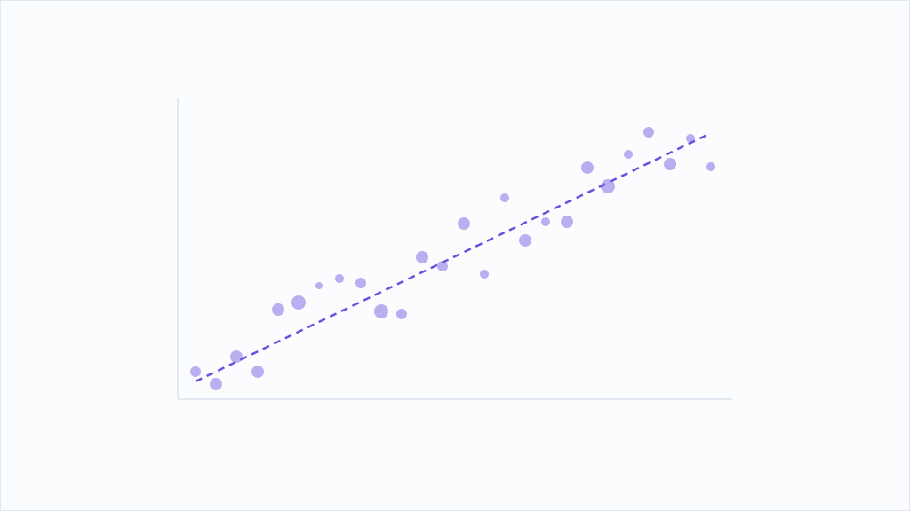

AI検索観測所
ChatGPTやPerplexityで自社が出るか、実際に測ってみました ― 分かったことと、まだ測れていないこと
AI検索で自社が引用元として出るのかを、Playwrightで実際に測定しました。個社サイトは引用されていました。ただし構造化データは効かず、測定そのものが極めて不安定という結果も出ています。
続きを読む →ChatGPT・Perplexity・AI Overviews に実際に質問を投げ、どこが引用されるかを測った結果。意見ではなく数字を置く。
AI検索で自社が引用元として出るのかを、Playwrightで実際に測定しました。個社サイトは引用されていました。ただし構造化データは効かず、測定そのものが極めて不安定という結果も出ています。
続きを読む →
AI向けの案内ファイル「llms.txt」を、日本と海外の主要25サイトで実際に探しました。あったのは5サイト。日本の大手メディアはゼロで、入れていたのは海外のテック企業でした。
続きを読む →
ChatGPTやClaudeなどのAIが記事を読みに来るクローラを、主要サイトは許可しているのか拒否しているのか。25サイトのrobots.txtを実際に取得して数えました。拒否していたのは主に新聞社でした。
続きを読む →
ChatGPTやPerplexityが答えの中で自社を「出典」として挙げるように働きかけるのがAEOです。従来のSEO（検索順位を上げる）と何が違い、いま何をすべきかを、確認できる範囲だけで整理します。効果の数値は測っていないものは書きません。
続きを読む →
AI検索が答えの根拠にページを選ぶとき、拾いやすい構造かどうかが効きます。結論先出し・表・見出しの型・FAQという、引用されやすいとされる4つの型を、確認できる仕組みの理由とともに整理します。効果の測定値は測っていないものは書きません。
続きを読む →
FAQ PageやArticleといった構造化データ（schema.org）を入れれば、AI検索に引用されやすくなるのか。仕組みと、当社が実際に測った範囲での結果を正直に整理します。効いたと断言できない部分は、断言できないと書きます。
続きを読む →
想定質問と短い答えを並べるFAQ形式は、AI検索に引用される材料として相性がよいとされます。その理由を仕組みから説明し、実際にどう作れば効きやすいかの型を整理します。効果の測定値は測っていないものは書きません。
続きを読む →
AI検索と一口に言っても、出典の選び方も見せ方もエンジンごとに違います。ChatGPT検索・Perplexity・Google AI Overviews・Geminiが出典をどう扱うかを、公開されている仕組みと画面で確認できる範囲だけで整理します。順位や引用率などの測定値は書きません。
続きを読む →AI検索は答えの根拠を欲しがります。他所の焼き直しより、そのページにしかない一次情報や独自データのほうが引用されやすいと言われる理由を、仕組みから整理します。中小企業が出せる一次情報の作り方も。効果の測定値は測っていないものは書きません。
続きを読む →